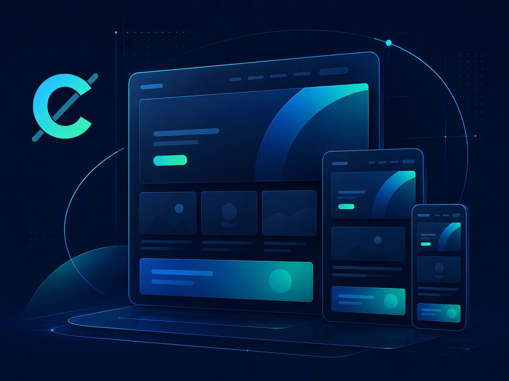
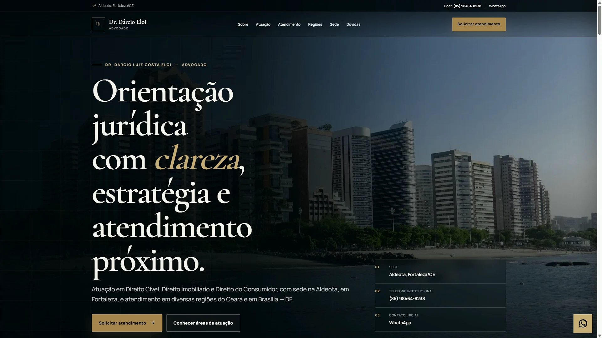

A
Arquitetura
Define quais páginas existem, como se conectam e onde cada informação deve aparecer.
Criação de sites
A Carthage organiza páginas, conteúdo, identidade, navegação, contato, domínio e publicação para construir uma presença digital própria.

Site versus presença digital
Um site reúne conteúdo, identidade, caminhos de decisão, contato e infraestrutura. A presença digital surge quando essas partes funcionam de forma coerente.
Define quais páginas existem, como se conectam e onde cada informação deve aparecer.
Explica serviço, processo, limites, diferenciais e próximos passos sem frases vazias.
Garante leitura, navegação, formulários e CTAs em desktop, tablet e celular.
O que é desenvolvido
Objetivo, público, mapa do site, hierarquia e caminhos relacionados.
Paleta, tipografia, componentes, imagens, mockups e movimento controlado.
HTML semântico, CSS responsivo, JavaScript organizado, domínio e deploy.
Experiência mobile
Desktop não é simplesmente reduzido. Navegação, grids, vídeo, botões e formulários mudam de composição quando a tela exige.

Celular · captura vertical real do projeto publicado
Escopo técnico
O domínio idealmente permanece sob controle do cliente. Hospedagem e administração técnica devem ser acordadas com clareza.
Textos, imagens, marca, dados de contato e autorizações precisam ser identificados antes da publicação.
Alterações futuras, suporte e evolução não são presumidos como ilimitados; condições devem ser combinadas.
Meta Pixel, UTMs e páginas específicas podem ser preparados, sem apresentar gestão de tráfego como serviço inexistente.
Dúvidas
Um site institucional distribui a informação por assuntos e intenções: empresa, soluções, processo, projetos, contato e conteúdo legal. Isso melhora leitura, navegação, indexação e a capacidade de aprofundar cada tema sem transformar a página inicial em um acúmulo de blocos.
A arquitetura final depende da jornada real do público. Quantidade de páginas, profundidade e recursos são definidos pelo diagnóstico, não por um pacote genérico.
A proposta informa quem fornece textos, fotografias, identidade e documentos. A Carthage pode estruturar, revisar e orientar o conteúdo dentro do escopo, mas informações factuais sobre a empresa sempre precisam de validação do cliente.
Quando não existe fotografia própria, são definidos critérios para banco de imagens ou produção. Imagens conceituais nunca são apresentadas como equipe, sede ou projeto real.
A base inclui HTML semântico, títulos hierárquicos, navegação por teclado, foco visível, textos alternativos, campos rotulados, adaptação a movimento reduzido e metadados essenciais.
Desempenho envolve dimensões de mídia, carregamento controlado, redução de scripts desnecessários e testes nas páginas críticas. SEO contínuo e produção recorrente de conteúdo podem exigir escopo adicional.
A entrega inclui orientações sobre domínio, hospedagem, acessos, cópias de segurança e responsabilidades. O cliente deve permanecer titular das contas essenciais para não ficar dependente de um fornecedor.
Manutenção, atualizações de conteúdo, monitoramento e novas páginas podem ser contratados separadamente com prazos e limites claros.